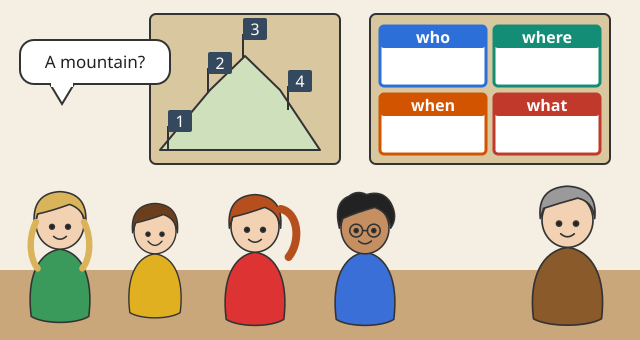
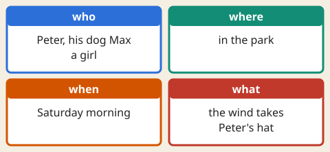
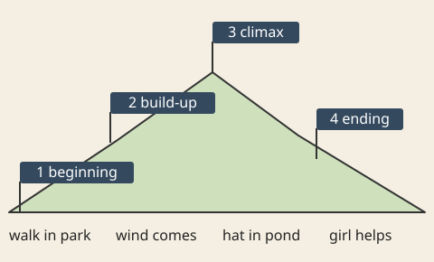

Wer, wo, wann, was: die story map
Mit einem KI-Tutor lernen
Ein KI-Tutor erklärt dir diese Seite und hilft dir bei den Aufgaben. Wähl deinen Assistenten:
Mit Claude öffnen Mit ChatGPT öffnen Mit Mistral Vibe öffnen
Du nutzt dein eigenes Konto beim Anbieter. Der Assistent ist kein Angebot von lernapps.net: lernapps liefert nur Inhalte und Aufgaben. Die Wahl gilt für alle Seiten, nur auf diesem Gerät.
Ein Berg und vier Felder

Von links: Sophie (Zöpfe), Peter (gelbe Jacke), Ellie (roter Pferdeschwanz), Amir (Brille) und Mr Hill (graue Haare). An der Wand hängen links der Geschichtenberg mit vier Fähnchen und rechts die story map mit vier noch leeren Feldern.
Quelle: eigene Zeichnung. Lizenz: CC-BY-4.0.Es ist Montag in der Geschichtenwoche. Mr Hill hat in der Geschichtenecke zwei Bilder aufgehängt: einen Geschichtenberg (englisch: story mountain) und eine story map mit vier Feldern. Sophie fragt: „A mountain?“ Mr Hill nickt. Zuerst lesen die Kinder eine ganz kurze Geschichte.
Aufgabe
Lösung
Sophie und Amir richtige Antwort
Beide sitzen in der Bibliothek. Sie sind die Figuren.
Sophie, Amir und die Bibliothek
Die Bibliothek ist ein Ort, keine Figur.
nur Sophie
Auch Amir kommt vor.
Figuren sind Personen oder Tiere.
Mehr dazu: Lernlandkarte Englisch · Figuren, Ort und Handlung
Das kannst du danach: Du findest in einer Geschichte heraus, wer vorkommt, wo und wann sie spielt und was passiert. Du schreibst es in die story map und hängst die Ereignisse an den Berg.
Diese Wörter sind neu auf dem Klassenzimmer-Poster.
| Wort | Bedeutung |
|---|---|
| character | Figur |
| build-up | Aufbau |
| climax | Höhepunkt |
| pond | Teich |
| shed | Schuppen |
| shelf | Regal |
Die story map und der Geschichtenberg
Mr Hill liest eine Geschichte vor. Lies sie auch: „On Saturday morning Peter and his dog Max went to the park. Peter had a red hat. Suddenly the wind took the hat and it fell into the pond. A girl in a red coat helped Peter. She got the hat out of the pond and Peter said thank you.“

Die story map zur Geschichte vom roten Hut. Jedes Feld hat eine eigene Farbe: who blau, where grün, when orange, what rot.
Quelle: eigene Zeichnung. Lizenz: CC-BY-4.0.Die story map beantwortet vier Fragen. Who? Welche Figuren kommen vor? Where? Wo spielt die Geschichte? When? Wann spielt sie, an welchem Tag, zu welcher Zeit? What? Was passiert? Die Einträge sind kurz.

Der Geschichtenberg zur selben Geschichte. Die Fähnchen stehen in der Reihenfolge der Geschichte, der Gipfel ist der Höhepunkt.
Quelle: eigene Zeichnung. Lizenz: CC-BY-4.0.Merke
Die Map sagt, wer, wo, wann und was. Der Berg sagt, in welcher Reihenfolge. Jedes Fähnchen am Berg ist eine Station: beginning ist der Anfang, build-up der Aufbau, climax der spannendste Moment und ending das Ende. In die Map schreibst du kurze Einträge im simple present, zum Beispiel „The wind takes Peter's hat.“ Das gilt auch, wenn die Geschichte in der Vergangenheit erzählt wird. Bei he, she und it hat das Verb ein -s.
Fülle die story map und hänge die Ereignisse an den Berg
Jetzt liest du eine neue Geschichte: „On Friday afternoon Ellie and Amir cleaned the old shed behind the school. Behind a chair Ellie found a small key. ‚What does it open?‘ asked Amir. They tried the key in an old desk, but it did not open. Then Ellie saw a little blue box on a shelf. The key opened the box! Inside the box they found old photos of the school.“
Aufgabe
Lösung
Ellie richtige Antwort
Ellie ist eine Figur.
Amir richtige Antwort
Amir ist eine Figur.
the old shed
Der Schuppen ist der Ort, Feld where.
a small key
Ein Schlüssel ist ein Ding, keine Figur.
Friday afternoon
Das ist die Zeit, Feld when.
Figuren sind Personen oder Tiere.
Mehr dazu: Lernlandkarte Englisch · Figuren, Ort und Handlung
Aufgabe
Lösung
in the old shed richtige Antwort
Hier spielt die ganze Geschichte.
on the shelf
Das Regal ist nur der Platz der Kiste.
on Friday afternoon
Das sagt, wann, nicht wo.
Der Ort ist der Platz der ganzen Geschichte.
Mehr dazu: Lernlandkarte Englisch · Figuren, Ort und Handlung
Aufgabe
Lösung
on Friday afternoon richtige Antwort
Ein Tag und eine Tageszeit.
in the old shed
Das sagt, wo, nicht wann.
a small key
Ein Schlüssel ist ein Ding, keine Zeit.
Die Zeit ist ein Tag oder eine Tageszeit.
Mehr dazu: Lernlandkarte Englisch · Figuren, Ort und Handlung
Aufgabe
Lösung
Richtige Antwort: 1. Ellie and Amir clean the shed, 2. Ellie finds a small key, 3. The key opens a blue box, 4. They look at old photos
Putzen, Schlüssel finden, Kiste öffnen, Fotos ansehen.
Mehr dazu: Lernlandkarte Englisch · Figuren, Ort und Handlung
Aufgabe
Lösung
Am Gipfel ist es am spannendsten, danach endet die Geschichte richtige Antwort
Der Gipfel (climax) ist der spannendste Moment, das Ende kommt danach.
Der Gipfel ist immer das letzte Ereignis der Geschichte
Nach dem Gipfel kommt noch das Ende (ending).
Das Ende ist am wichtigsten und hängt darum am höchsten
Am höchsten hängt der climax, der spannendste Moment.
Der climax ist der spannendste Moment, danach folgt das Ende.
Mehr dazu: Lernlandkarte Englisch · Figuren, Ort und Handlung
Aufgabe
Lies: „Peter made a big cake in the kitchen. Then he ate it all.“ Schreibe zwei Einträge für what im simple present.
- Peter · make · cake
- Peter · eat · cake
Lösung
- Peter makes a cake. (auch richtig: Peter makes a big cake.; Peter makes the cake.; Peter makes cake.; Peter makes a cake in the kitchen.; Peter makes a big cake in the kitchen.)
- Peter eats the cake. (auch richtig: Peter eats a cake.; Peter eats the big cake.; Peter eats cake.; Peter eats it.; Peter eats it all.; Peter eats all the cake.)
Aufgabe
Hör zu und schreibe, was du hörst.
- KI
- KI
- KI
Lösung
- Sophie and Peter read a story.
- The story happens in a small town.
- They find a letter in the garden.
Selbst sagen und eine Map füllen
Aufgabe
Hör zu, sprich nach und nimm dich auf. Vergleiche dann mit dem Original.
Tipp
Hör zu. Sprich dann langsam nach.
- Who is in the story?KI
- Where does the story happen?KI
- What happens at the end?KI
Zum Aufnehmen braucht diese Aufgabe JavaScript. Die Beispiele kannst du auch ohne anhören.
Lösung
- Who is in the story?
- Where does the story happen?
- What happens at the end?
Offene Aufgabe
Denke an eine Geschichte, die du kennst, zum Beispiel ein Märchen, einen Film oder ein Buch. Schreibe vier kurze Zeilen auf Englisch, die mit who:, where:, when: und what: beginnen.
Tipp
Die App bewertet nicht. Prüfe anhand der Punkte.
Eine gute Antwort enthält:
Lösung
who: a girl and a bird where: in a garden when: on Sunday morning what: they sing a song
Wie es weitergeht
Danach gibt Mr Hill jedem Kind einen Zettel. Darauf steht: „Tell the story in three sentences.“ Auf der nächsten Seite lernst du, das Wichtigste einer Geschichte kurz zusammenzufassen.